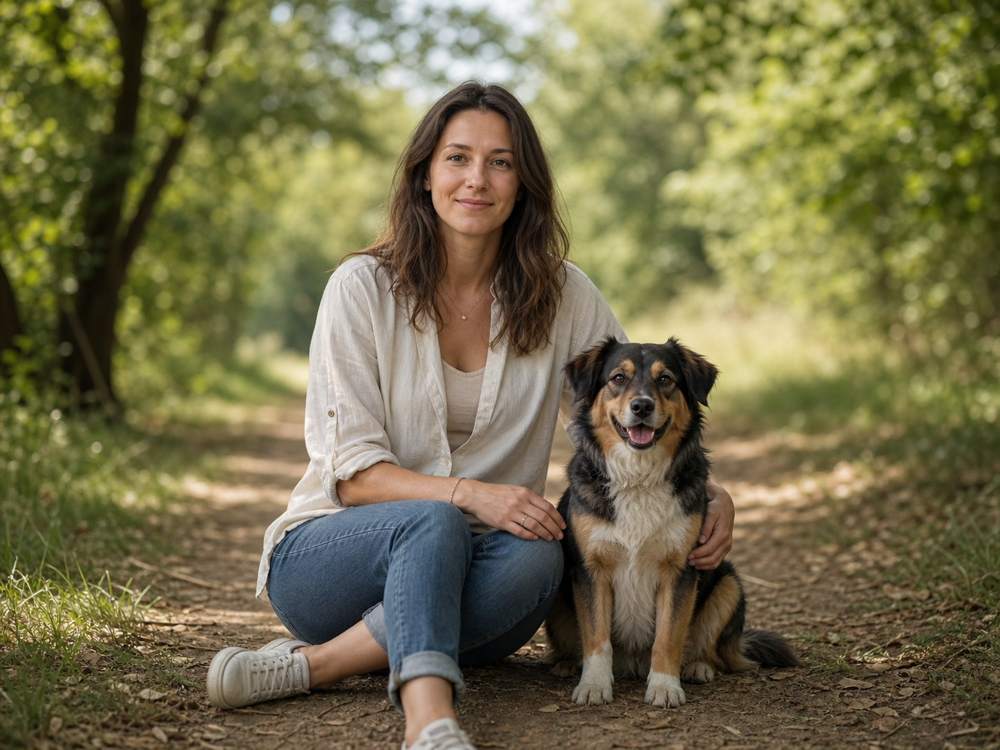
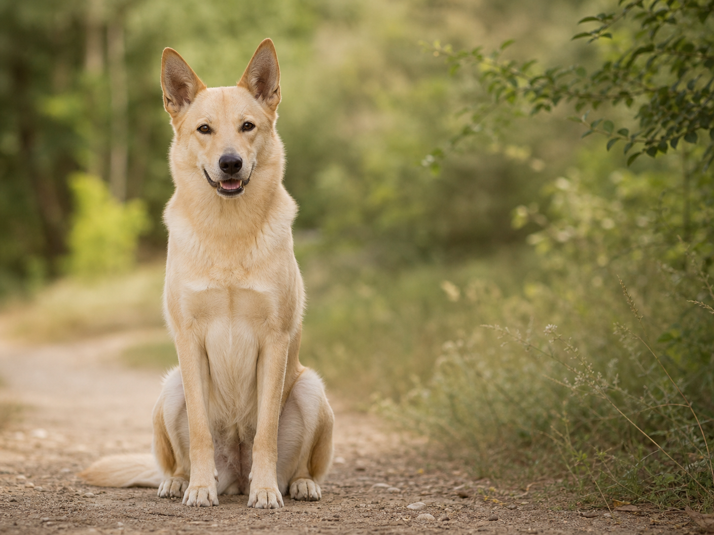

Über mich
Hallo, ich bin Dounia.
Als ausgebildete Pädagogin mit 15 Jahren Berufserfahrung begleite ich Kinder, Jugendliche und Familien in unterschiedlichen Entwicklungsphasen. Dabei ist mir wichtig, jedem Menschen mit Offenheit, Respekt und echtem Interesse zu begegnen.
In meiner Arbeit stehen nicht Probleme oder Defizite im Mittelpunkt, sondern die individuellen Stärken, Fähigkeiten und Möglichkeiten, die bereits vorhanden sind. Gemeinsam schaffen wir einen Rahmen, in dem Orientierung entstehen, Selbstvertrauen wachsen und neue Perspektiven sichtbar werden können.
Ich arbeite ruhig, wertschätzend und auf Augenhöhe. Kinder und Jugendliche sollen sich ernst genommen fühlen und die Freiheit haben, ihren eigenen Weg ohne Druck, aber mit verlässlicher Unterstützung zu entdecken.
Für mich bedeutet pädagogische Begleitung nicht, fertige Lösungen vorzugeben. Vielmehr geht es darum, zuzuhören, zu verstehen und gemeinsam Schritte zu entwickeln, die zur jeweiligen Situation und Persönlichkeit passen.

Mein beruflicher Werdegang.
2021 Pädagogische Arbeit in der AWO Düsseldorf
2022 Weiterbildung in der tiergestützten Pädagogik
2023 Tiergestütztes Arbeiten
Heute Individuelle pädagogische Begleitung
Mein Weggefährte

Das ist Marsalla.
Marsalla begleitet mich seit einigen Jahren und ist ein wichtiger Teil meines Alltags. Besonders gerne ist er draußen unterwegs, liebt lange Spaziergänge und freut sich über jede Gelegenheit, neue Menschen kennenzulernen.
In der tiergestützten Arbeit bringt er genau die Eigenschaften mit, die ihn auch im Alltag auszeichnen: Ruhe, Geduld und eine freundliche Neugier. Oft schafft er einen ersten Zugang, wenn Gespräche schwerfallen, und sorgt mit seiner gelassenen Art für eine entspannte Atmosphäre.
Für viele Kinder und Jugendliche ist Marsalla deshalb mehr als nur ein Hund. Er ist ein treuer Begleiter, der Vertrauen schenkt, ohne große Erwartungen zu haben.